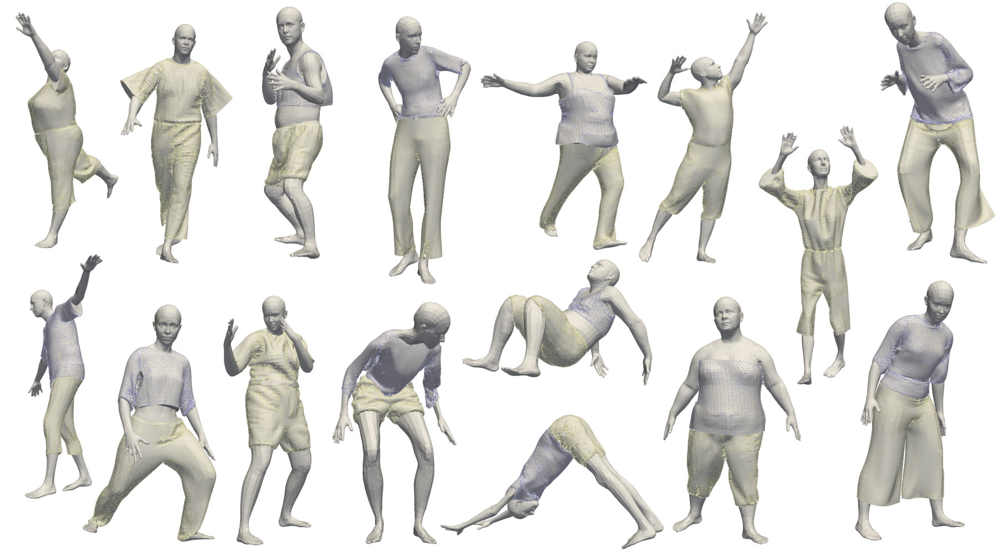
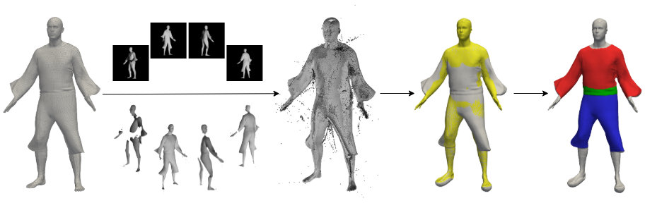
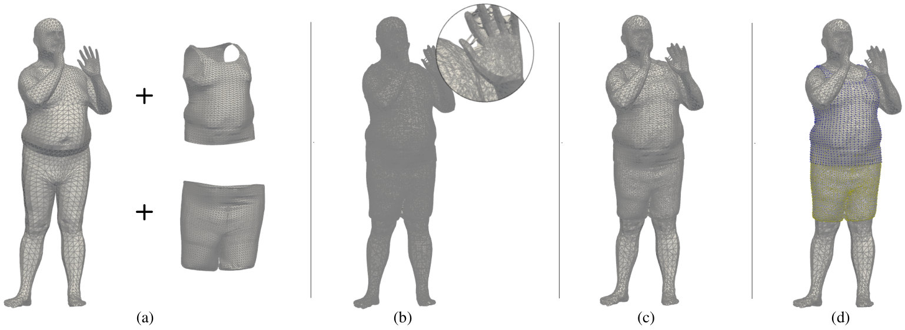
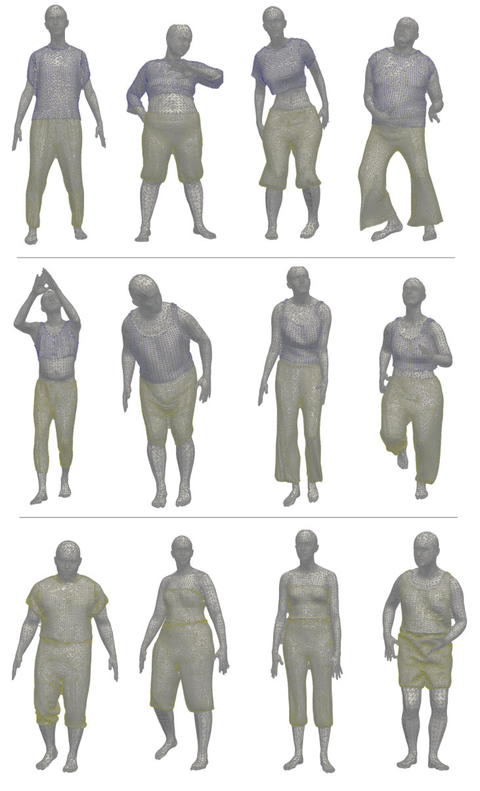
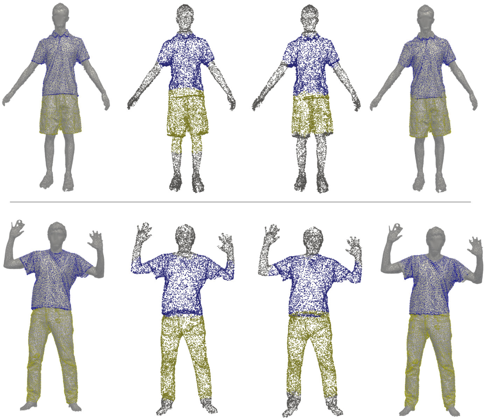

Abstract
The 3D cloth segmentation task is particularly challenging due to the extreme variation of shapes, even among the same category of clothes. Several data-driven methods try to cope with this problem but they have to face the lack of available data capable to generalize to the variety of real-world data. For this reason, we present GIM3D (Garments In Motion 3D), a synthetic dataset of clothed 3D human characters in different poses. The over 4000 3D models in this dataset are produced by a physical simulation of clothes with different fabrics, sizes, and tightness, using animated human avatars having a large variety of shapes. Our dataset is composed of single meshes created to simulate 3D scans, with labels for the separate clothes and the visible body parts. We also provide an evaluation of the use of GIM3D as a training set on garment segmentation tasks using state-of-the-art data-driven methods for both meshes and point clouds.
Dataset
GIM3D starts from the animated bodies and the physically simulated garments of CLOTH3D. Body and clothes are merged into a single surface, as a 3D scanner would see them, and every vertex keeps the label of the garment or of the body part it comes from.


Three outfit categories
The dataset contains 4623 meshes: 1851 with two separate garments and 2772 with a single one. The outfits are t-shirt + trousers, top + trousers and jumpsuit, with large variability inside each category: sleeve and trouser lengths, straps, fabrics and fit.
Each model comes as a triangle mesh with binary labels (body / clothes) and three-class labels (body / upper garment / lower garment), in formats ready for PointNet, PointNet++ and DiffusionNet.

Results
We train state-of-the-art networks for point clouds (PointNet, PointNet++) and meshes (DiffusionNet) on GIM3D and test them on real scans from the SIZER and BUFF datasets, never seen during training.

Publications
- GIM3D: A 3D Dataset for Garment SegmentationP. Musoni, S. Melzi, U. CastellaniSmart Tools and Applications in Graphics (STAG 2022), Eurographics
- GIM3D plus: A labeled 3D dataset to design data-driven solutions for dressed humansP. Musoni, S. Melzi, U. CastellaniGraphical Models, vol. 129, 101187, 2023
BibTeX
If you use this work, please cite:
@inproceedings{musoni2022gim3d,
title = {{GIM3D: A 3D Dataset for Garment Segmentation}},
author = {Musoni, Pietro and Melzi, Simone and Castellani, Umberto},
booktitle = {Smart Tools and Applications in Graphics - Eurographics Italian Chapter Conference},
editor = {Cabiddu, Daniela and Schneider, Teseo and Allegra, Dario and Catalano, Chiara Eva and Cherchi, Gianmarco and Scateni, Riccardo},
year = {2022},
publisher = {The Eurographics Association},
doi = {10.2312/stag.20221252}
}@article{musoni2023gim3dplus,
title = {GIM3D plus: A labeled 3D dataset to design data-driven solutions for dressed humans},
author = {Musoni, Pietro and Melzi, Simone and Castellani, Umberto},
journal = {Graphical Models},
volume = {129},
pages = {101187},
year = {2023},
doi = {10.1016/j.gmod.2023.101187}
}Resources
Code & data
- GIM3D repository (data format and quick start)
- Dataset download
- Original body and garment models from CLOTH3D
Related work
- Scanned GIM3D, a scanned version of the dataset
- Point Cloud Segmentation for 3D Clothed Human Layering (Computers & Graphics 2025)
Acknowledgements
This work was supported by the PRIN project nr. 202273Z7PZ, Automatic Reconstruction and Interactive simulation of non-rigid shape for computer-aided cloth design (I-CLOTH), and partially by the MIUR project “Dipartimenti di Eccellenza 2018-2022” of the Department of Computer Science of the University of Verona. The data are intended for non-commercial scientific research only.